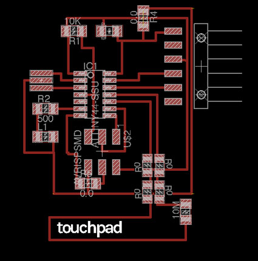

01_FAB_Hello library
- 6pin programming header (PINHD-2x3-SMD Description: PIN HEADER) - microcontroller attiny44A (ATTINY44-SSU Description: SOIC14) - Resistor (value 10k / RESISTOR1206/Description: 1206) - Resistor (value 10 M / RESISTOR1206/Description: 1206) - Button/6MM_SWITCH6MM_SWITCH Description OMRON SWITCH) - Ground/GND/Supply symbol - VCC/Supply Symbol - LED/LED1206/description 120601_SparkFun Library
- FTDI header (ARDUINO_SERIAL_PROGRAMSMD /ARDUINO_SERIAL_PROGRAM)/Description: 1X06-SMD - 20MHz resonator (RESONATOR SMD)
make -f hello.load.45.make
make -f hello.load.45.make program_usbtiny_fuses
make -f hello.load.45.make program_usbtiny
hello.load.45.c
// // hello.load.45.c // // step response loading hello-world // 9600 baud FTDI interface // // Neil Gershenfeld // 10/27/10 // // (c) Massachusetts Institute of Technology 2010 // This work may be reproduced, modified, distributed, // performed, and displayed for any purpose. Copyright is // retained and must be preserved. The work is provided // as is; no warranty is provided, and users accept all // liability. // #include#include #define output(directions,pin) (directions |= pin) // set port direction for output #define set(port,pin) (port |= pin) // set port pin #define clear(port,pin) (port &= (~pin)) // clear port pin #define pin_test(pins,pin) (pins & pin) // test for port pin #define bit_test(byte,bit) (byte & (1 << bit)) // test for bit set #define bit_delay_time 102 // bit delay for 9600 with overhead #define bit_delay() _delay_us(bit_delay_time) // RS232 bit delay #define half_bit_delay() _delay_us(bit_delay_time/2) // RS232 half bit delay #define charge_delay_1() _delay_us(1) // charge delay 1 #define charge_delay_2() _delay_us(10) // charge delay 2 #define charge_delay_3() _delay_us(100) // charge delay 3 #define settle_delay() _delay_us(100) // settle delay #define char_delay() _delay_ms(10) // char delay #define serial_port PORTA #define serial_direction DDRA #define serial_pin_out (1 << PA1) #define charge_port PORTA #define charge_direction DDRA #define charge_pin (1 << PA3) void put_char(volatile unsigned char *port, unsigned char pin, char txchar) { // // send character in txchar on port pin // assumes line driver (inverts bits) // // start bit // clear(*port,pin); bit_delay(); // // unrolled loop to write data bits // if bit_test(txchar,0) set(*port,pin); else clear(*port,pin); bit_delay(); if bit_test(txchar,1) set(*port,pin); else clear(*port,pin); bit_delay(); if bit_test(txchar,2) set(*port,pin); else clear(*port,pin); bit_delay(); if bit_test(txchar,3) set(*port,pin); else clear(*port,pin); bit_delay(); if bit_test(txchar,4) set(*port,pin); else clear(*port,pin); bit_delay(); if bit_test(txchar,5) set(*port,pin); else clear(*port,pin); bit_delay(); if bit_test(txchar,6) set(*port,pin); else clear(*port,pin); bit_delay(); if bit_test(txchar,7) set(*port,pin); else clear(*port,pin); bit_delay(); // // stop bit // set(*port,pin); bit_delay(); // // char delay // bit_delay(); } int main(void) { // // main // static unsigned char up_lo,up_hi,down_lo,down_hi; // // set clock divider to /1 // CLKPR = (1 << CLKPCE); CLKPR = (0 << CLKPS3) | (0 << CLKPS2) | (0 << CLKPS1) | (0 << CLKPS0); // // initialize output pins // set(serial_port, serial_pin_out); output(serial_direction, serial_pin_out); clear(charge_port, charge_pin); output(charge_direction, charge_pin); // // init A/D // ADMUX = (0 << REFS1) | (0 << REFS0) // Vcc ref | (0 << ADLAR) // right adjust | (0 << MUX4) | (0 << MUX3) | (0 << MUX2) | (1 << MUX1) | (0 << MUX0); // PA2 ADCSRA = (1 << ADEN) // enable | (1 << ADPS2) | (1 << ADPS1) | (1 << ADPS0); // prescaler /128 // // main loop // while (1) { // // send framing // put_char(&serial_port, serial_pin_out, 1); char_delay(); put_char(&serial_port, serial_pin_out, 2); char_delay(); put_char(&serial_port, serial_pin_out, 3); char_delay(); put_char(&serial_port, serial_pin_out, 4); // // settle, charge, and wait 1 // settle_delay(); set(charge_port, charge_pin); charge_delay_1(); // // initiate conversion // ADCSRA |= (1 << ADSC); // // wait for completion // while (ADCSRA & (1 << ADSC)){ // niente } // // save result // up_lo = ADCL; up_hi = ADCH; // // settle, discharge, and wait 1 // settle_delay(); clear(charge_port, charge_pin); charge_delay_1(); // // initiate conversion // ADCSRA |= (1 << ADSC); // // wait for completion // while (ADCSRA & (1 << ADSC)) ; // // save result // down_lo = ADCL; down_hi = ADCH; // // send result // put_char(&serial_port, serial_pin_out, up_lo); char_delay(); put_char(&serial_port, serial_pin_out, up_hi); char_delay(); put_char(&serial_port, serial_pin_out, down_lo); char_delay(); put_char(&serial_port, serial_pin_out, down_hi); char_delay(); // // settle, charge, and wait 2 // settle_delay(); set(charge_port, charge_pin); charge_delay_2(); // // initiate conversion // ADCSRA |= (1 << ADSC); // // wait for completion // while (ADCSRA & (1 << ADSC)) ; // // save result // up_lo = ADCL; up_hi = ADCH; // // settle, discharge, and wait 2 // settle_delay(); clear(charge_port, charge_pin); charge_delay_2(); // // initiate conversion // ADCSRA |= (1 << ADSC); // // wait for completion // while (ADCSRA & (1 << ADSC)) ; // // save result // down_lo = ADCL; down_hi = ADCH; // // send result // put_char(&serial_port, serial_pin_out, up_lo); char_delay(); put_char(&serial_port, serial_pin_out, up_hi); char_delay(); put_char(&serial_port, serial_pin_out, down_lo); char_delay(); put_char(&serial_port, serial_pin_out, down_hi); char_delay(); // // settle, charge, and wait 3 // settle_delay(); set(charge_port, charge_pin); charge_delay_3(); // // initiate conversion // ADCSRA |= (1 << ADSC); // // wait for completion // while (ADCSRA & (1 << ADSC)) ; // // save result // up_lo = ADCL; up_hi = ADCH; // // settle, discharge, and wait 3 // settle_delay(); clear(charge_port, charge_pin); charge_delay_3(); // // initiate conversion // ADCSRA |= (1 << ADSC); // // wait for completion // while (ADCSRA & (1 << ADSC)) ; // // save result // down_lo = ADCL; down_hi = ADCH; // // send result // put_char(&serial_port, serial_pin_out, up_lo); char_delay(); put_char(&serial_port, serial_pin_out, up_hi); char_delay(); put_char(&serial_port, serial_pin_out, down_lo); char_delay(); put_char(&serial_port, serial_pin_out, down_hi); char_delay(); } }
python load.py /dev/cu.usbserial-A702U58D
hello.load.45.py
# hello.load.45.py # # receive and display loading step response # hello.step.45.py serial_port # # Neil Gershenfeld # CBA MIT 10/29/10 # # (c) Massachusetts Institute of Technology 2010 # Permission granted for experimental and personal use; # license for commercial sale available from MIT # from Tkinter import * import serial WINDOW = 600 # window size eps = 0.5 # filter time constant filter1 = 0.0 # filtered value filter2 = 0.0 # filtered value filter3 = 0.0 # filtered value def idle(parent,canvas): global filter1, filter2, filter3, eps # # idle routine # byte2 = 0 byte3 = 0 byte4 = 0 ser.flush() # # find framing # while 1: byte1 = byte2 byte2 = byte3 byte3 = byte4 byte4 = ord(ser.read()) if ((byte1 == 1) & (byte2 == 2) & (byte3 == 3) & (byte4 == 4)): break # # read and plot # up_low1 = ord(ser.read()) up_high1 = ord(ser.read()) down_low1 = ord(ser.read()) down_high1 = ord(ser.read()) up_low2 = ord(ser.read()) up_high2 = ord(ser.read()) down_low2 = ord(ser.read()) down_high2 = ord(ser.read()) up_low3 = ord(ser.read()) up_high3 = ord(ser.read()) down_low3 = ord(ser.read()) down_high3 = ord(ser.read()) up_value1 = 256*up_high1 + up_low1 down_value1 = 256*down_high1 + down_low1 up_value2 = 256*up_high2 + up_low2 down_value2 = 256*down_high2 + down_low2 up_value3 = 256*up_high3 + up_low3 down_value3 = 256*down_high3 + down_low3 value1 = (up_value1 + (1023 - down_value1))/2.0 value2 = (up_value2 + (1023 - down_value2))/2.0 value3 = (up_value3 + (1023 - down_value3))/2.0 filter1 = (1-eps)*filter1 + eps*value1 filter2 = (1-eps)*filter2 + eps*value2 filter3 = (1-eps)*filter3 + eps*value3 x1 = int(.2*WINDOW + (.9-.2)*WINDOW*filter1/1023.0) x2 = int(.2*WINDOW + (.9-.2)*WINDOW*filter2/1023.0) x3 = int(.2*WINDOW + (.9-.2)*WINDOW*filter3/1023.0) canvas.itemconfigure("text1",text="%.1f"%filter1) canvas.itemconfigure("text2",text="%.1f"%filter2) canvas.itemconfigure("text3",text="%.1f"%filter3) canvas.coords('rect11',.2*WINDOW,.05*WINDOW,x1,.2*WINDOW) canvas.coords('rect12',x1,.05*WINDOW,.9*WINDOW,.2*WINDOW) canvas.coords('rect21',.2*WINDOW,.3*WINDOW,x2,.45*WINDOW) canvas.coords('rect22',x2,.3*WINDOW,.9*WINDOW,.45*WINDOW) canvas.coords('rect31',.2*WINDOW,.55*WINDOW,x3,.7*WINDOW) canvas.coords('rect32',x3,.55*WINDOW,.9*WINDOW,.7*WINDOW) canvas.update() parent.after_idle(idle,parent,canvas) # # check command line arguments # if (len(sys.argv) != 2): print "command line: hello.load.45.py serial_port" sys.exit() port = sys.argv[1] # # open serial port # ser = serial.Serial(port,9600) ser.setDTR() # # set up GUI # root = Tk() root.title('hello.load.45.py (q to exit)') root.bind('q','exit') canvas = Canvas(root, width=WINDOW, height=.75*WINDOW, background='white') # canvas.create_text(.1*WINDOW,.125*WINDOW,text="1",font=("Helvetica", 24),tags="text1",fill="#0000b0") canvas.create_rectangle(.2*WINDOW,.05*WINDOW,.3*WINDOW,.2*WINDOW, tags='rect11', fill='#b00000') canvas.create_rectangle(.3*WINDOW,.05*WINDOW,.9*WINDOW,.2*WINDOW, tags='rect12', fill='#0000b0') # canvas.create_text(.1*WINDOW,.375*WINDOW,text="2",font=("Helvetica", 24),tags="text2",fill="#0000b0") canvas.create_rectangle(.2*WINDOW,.3*WINDOW,.3*WINDOW,.45*WINDOW, tags='rect21', fill='#b00000') canvas.create_rectangle(.3*WINDOW,.3*WINDOW,.9*WINDOW,.45*WINDOW, tags='rect22', fill='#0000b0') # canvas.create_text(.1*WINDOW,.625*WINDOW,text="3",font=("Helvetica", 24),tags="text3",fill="#0000b0") canvas.create_rectangle(.2*WINDOW,.55*WINDOW,.3*WINDOW,.7*WINDOW, tags='rect31', fill='#b00000') canvas.create_rectangle(.3*WINDOW,.55*WINDOW,.9*WINDOW,.7*WINDOW, tags='rect32', fill='#0000b0') canvas.pack() # # start idle loop # root.after(100,idle,root,canvas) root.mainloop()
A newer version of TouchpaD is donwloable here as PNG for the milling machine. I had no time so far to test if it is better working than the documented version. I guess it should: indeed, the second version differs from the first just for the enlarged touch area, which was definitely too small in TouchpaD01. The overall dimension of the TouchpaD_V_1.2 is not over the FR1 big sheet size.